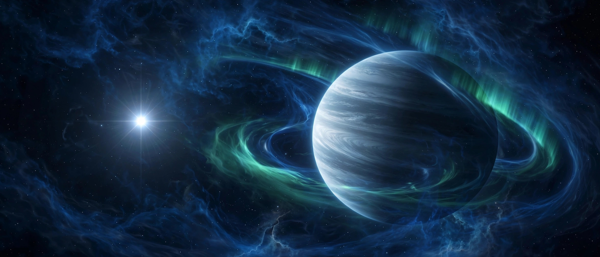

October 05, 2026
The "phoenix planet": first evidence of a world born after its star died

Illustration by The Discovery Wire (generated artwork for this story)
A dead star's wreckage may be the birthplace of a new planet.
That's the claim in a study published October 5 in Nature Astronomy, led by astronomer Jamie Williams of the University of Warwick. If confirmed, it would be the first spotted evidence of a "second-generation planet" — a world that formed after its star died, from the ashes the star left behind.
The weird chemistry
The white dwarf in question is called HS 0209+0832. White dwarfs are the small, dense cores left behind when stars like our sun puff up into red giants and blow their outer layers away. They're so dense that heavy elements sink into their centers, leaving pristine atmospheres of almost pure hydrogen and helium.
But many white dwarfs are "polluted" with heavier elements — usually silicon and iron from shattered planets the star devoured as it expanded. HS 0209+0832 broke the pattern. Hubble observed it back in 1999, and astronomers saw a strange chemical mix they couldn't identify. Reanalyzing that data with modern techniques, Williams's team found almost no iron and only traces of silicon — but an extraordinary amount of niobium, a silvery metal rare on Earth that had never been seen in a white dwarf before.
"We've never observed anything in the universe that's this niobium-rich before," Williams says. "We were quite confused at first."
Why niobium points to rebirth
Niobium forms in the slow neutron-capture process — the s-process — which mostly happens inside certain red giant stars as they shed their atmospheres and die. The team's proposal: material ejected by the dying star coalesced into a new planet rich in s-process elements. That planet is now evaporating under the white dwarf's harsh glare, and the white dwarf is slowly sipping its atmosphere, coating itself in a fresh layer of niobium and other s-process elements.
Support came from NASA's TESS telescope: HS 0209+0832's brightness changes with a period of about 4.4 days — too slow to be the white dwarf's own rotation, but a match for a gas giant planet orbiting very close in, about 6 million kilometers from the star. Williams imagines it as a silvery version of Jupiter.
The team is careful: this is a planet candidate. "We're not really sure, if it's not a planet, what it is," Williams says. "A planet is the most reasonable explanation."
Why it matters
Second-generation planets were predicted theoretically more than 15 years ago, but until now they were "more like a hypothesis, more like speculation," says planetary scientist Zifan Lin of Washington University in St. Louis, who wasn't involved in the work. "This is the first time we've seen evidence for that process."
And the stakes are personal: more than 95% of all stars will eventually become white dwarfs, including our sun. Finding that planetary systems can get a second life after stellar death means the story of a solar system doesn't necessarily end when its star does.
Source: Science News, October 5, 2026 (also reported by CNN, October 5, 2026). Paper: J.T. Williams et al., "Discovery of a second-generation planet candidate accreting onto a white dwarf," Nature Astronomy, 2026.
Source: Science News — read the original report
← Back to latest stories